Inhalt Index DeskTop Bronstein

 Algebra und Diskrete Mathematik Klassische algebraische Strukturen Vektorräume
Algebra und Diskrete Mathematik Klassische algebraische Strukturen Vektorräume


Ein Vektorraum über einem Körper K (K-Vektorraum) besteht aus einer additiv geschriebenen ABELschen Gruppe V=(V,+) von ,,Vektoren``, einem Körper 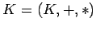 von ,,Skalaren`` und einer äußeren Multiplikation 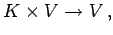 die jedem geordneten Paar (k,v) mit 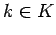 und 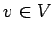 einen Vektor 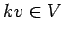 zuordnet. Dabei gelten folgende Gesetze:
| 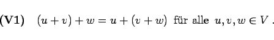 | (5.210) |
| 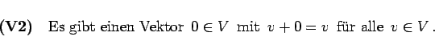 | (5.211) |
| 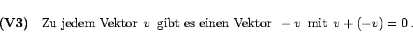 | (5.212) |
| 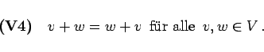 | (5.213) |
| 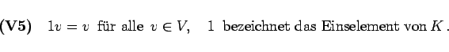 | (5.214) |
| 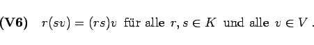 | (5.215) |
| 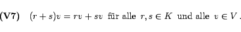 | (5.216) |
| 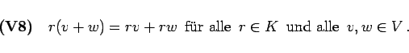 | (5.217) |
Ist 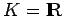, so spricht man von einem reellen Vektorraum .
| Beispiel A |
|
Einspaltige bzw. einzeilige reelle Matrizen vom Typ (n,1) bzw. (1,n) bilden bezüglich der Matrizenaddition und der äußeren Multiplikation mit einer reellen Zahl einen reellen Vektorraum 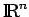 (s. Vektorraum der Spalten- bzw. Zeilenvektoren). |
| Beispiel B |
|
Alle reellen Matrizen vom Typ (m,n) bilden einen reellen Vektorraum. |
| Beispiel C | ||
|
Alle auf einem Intervall [a,b] stetigen reellen Funktionen bilden mit den durch
definierten Operationen einen reellen Vektorraum. Funktionenräume spielen in der Funktionalanalysis eine wesentliche Rolle. |